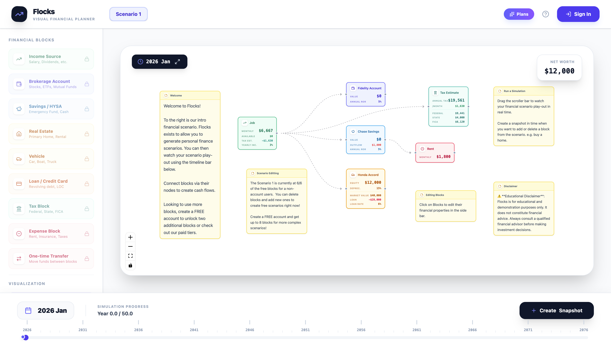

CAD Workspace
A browser-based CAD assembly workspace that combines a drag-and-drop part tree, contextual editing tools, and interactive Three.js rendering.
View repositoryEngineering software leader
Engineering software for systems that have to work.
I lead teams and build technical software spanning real-time simulation, embedded control, robotics, and internal engineering tools.
Selected work
Recent public work across technical interfaces, 3D interaction, automation, and operational software.
A browser-based CAD assembly workspace that combines a drag-and-drop part tree, contextual editing tools, and interactive Three.js rendering.
View repositoryA Python controller that combines LEGO NXT hardware, ultrasonic telemetry, and local Ollama reasoning to choose safety-aware exploration actions.
View repository
A visual financial planning experience for connecting income, assets, debt, and expenses into scenario simulations with timeline playback and snapshots.
Visit FlocksA map-based JavaScript application that consumes Boston transit data to visualize vehicle locations in real time.
View repositoryExperience
From field deployment to low-level control, I work comfortably where software meets physical systems.
Williams International Pontiac, MI
Manage a three-person internal software web development team, partnering with engineering groups on custom applications, developer tools, and tailored workflow pipelines. Direct sprint planning, release visibility, and resource allocation.
Williams International Pontiac, MI
Architected a high-fidelity Linux hardware-in-the-loop engine simulator and diagnostic suite with a modular React interface and industrial communication protocols including CAN, Modbus, and OPC UA.
Williams International Pontiac, MI
Developed bare-metal motor-control firmware and core UAV systems spanning ARM and PowerPC architectures, sensor interfaces, telemetry, maintenance tooling, and real-time communications.
Toyota Advanced Logistics Greenfield, IN
Led product engineering and field deployment for large-scale warehouse automation programs, integrating motion control, motor drives, optical sensors, software validation, and on-site commissioning.
Capabilities
Technologies used confidently across embedded systems, connected devices, engineering applications, and industrial automation.
Tools
Tools
Tools
Tools
Education
Master of Science, Computer Science
Computational Perception
& Robotics, remote
Bachelor of Science, Mechanical Engineering
Minor in
Psychology
Credentials